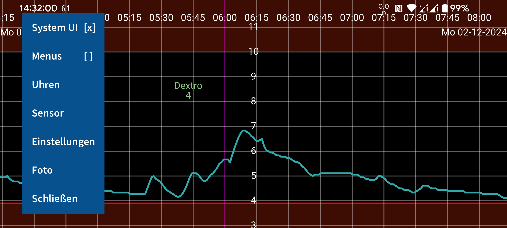
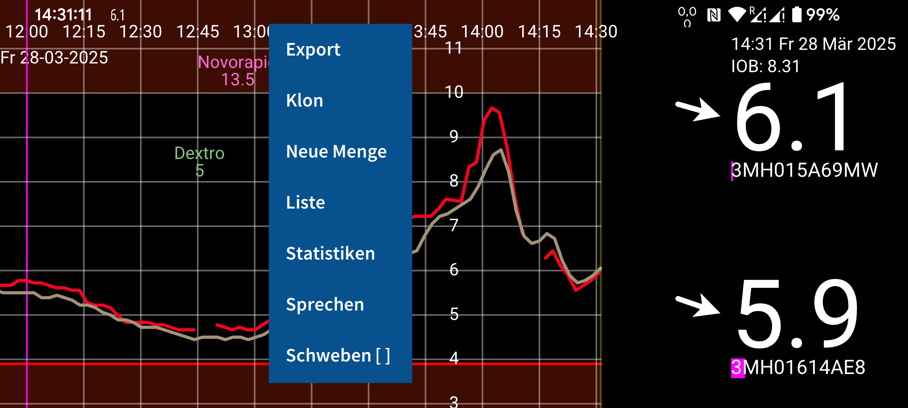
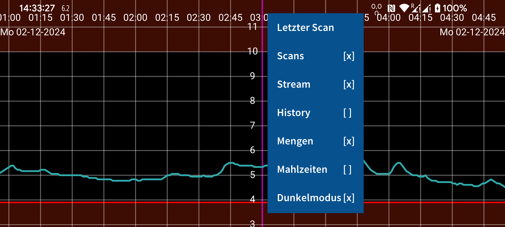
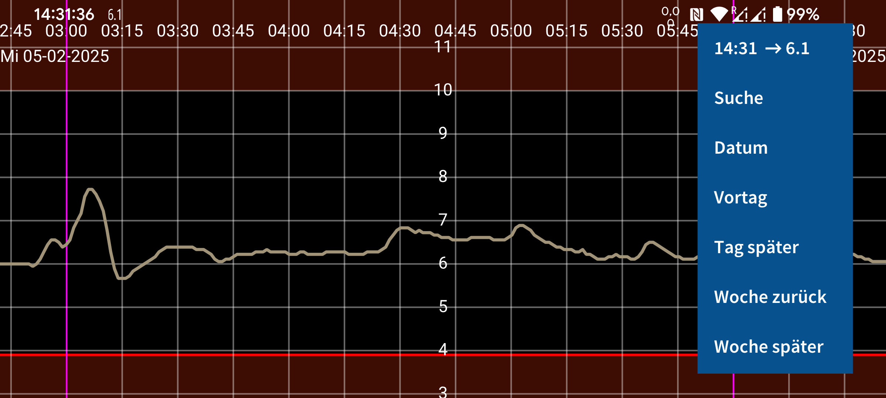

ar be de es fr hi it ja ko nl pl pt ru tr uk uz zh en
Juggluco ist ein Applet zur Blutzuckerkontrolle bei Diabetikern. Es kann Freestyle Libre (0 und 2) Sensoren (über NFC) scannen und (über Bluetooth) Glukosewerte von Freestyle Libre 2, 2+, 3, 3+, Sibionics GS1Sb und GS3, Dexcom G7/ONE+, Accu-Chek SmartGuide und CareSens Air Sensoren empfangen.
Wenn das Programm zum ersten Mal ausgeführt wird, können Sie einen Freestyle Libre 2 Sensor scannen, indem Sie ihn an den NFC-Sensor Ihres Smartphones halten. Anschließend versucht Juggluco, eine Bluetooth-Verbindung mit den Freestyle Libre 2-Sensoren herzustellen und jede Minute einen Glukosewert zu empfangen, ohne zu scannen. Um einen mit der Libre 3-App von Abbott aktivierten FreeStyle Libre 3 oder 3+ Sensor zu übernehmen, müssen Sie unter Einstellungen->Daten austauschen->Libreview die Libreview-Kontoinformationen angeben, die Sie zum Aktivieren des Sensors verwendet haben , auf „Konto-ID erhalten“ drücken und warten, bis die Konto-ID eintrifft, bevor Sie scannen. Es ist nicht möglich, einen Libre 3-Sensor zu übernehmen, der mit dem FreeStyle Libre 3-Lesegerät gestartet wurde.
Um eine Verbindung zu Sibionics GS1Sb , Dexcom G7/ONE+, Accu-Chek SmartGuide und CareSens Air Sensoren herzustellen, müssen Sie deren Datenmatrix mit dem linken Menü->Foto scannen. Dexcom G7/ONE+-Sensoren werden über Bluetooth gekoppelt, was Sie bei den meisten Telefonen akzeptieren müssen. Sie müssen sehr schnell zustimmen, sonst müssen Sie weitere 5 Minuten warten. Verhindern Sie so, dass sich der Bildschirm ausschaltet. Bei Samsung Galaxy Watch 4 und 7 müssen Sie der Kopplung nicht zustimmen. Verbrauchte Dexcom G7/ONE+-Sensoren bleiben noch lange über Bluetooth aktiv, nachdem sie die Aufzeichnung von Glukosewerten beendet haben. Um zu verhindern, dass Juggluco versucht, eine Kopplung mit dem falschen Sensor herzustellen, bewahren Sie alte Sensoren außerhalb der Bluetooth-Reichweite auf (z. B. 15 Meter entfernt in der Mikrowelle), insbesondere wenn ein alter Sensor denselben PIN-Code wie der neue Sensor hat. Schalten Sie Apps und Geräte aus (erzwungenes Beenden oder Deinstallieren), die zuvor mit dem Sensor verbunden waren. Während der Kopplung von Accu-Chek SmartGuide -Sensoren muss eine PIN eingegeben werden.
Um einen Sibionics GS3- Sensor mit Juggluco zu verwenden, scannen Sie den Datenmatrix-Code auf der Verpackung oder den Sensor per NFC. Nach dem Scannen erscheint ein Display, auf dem Sie eine ID eingeben müssen. Falls der Sensor bereits mit der Sibionics GS3-App verwendet wurde oder Sie diese später nutzen möchten, geben Sie die E-Mail-Adresse und das Passwort ein, die Sie für die Sibionics GS3-App verwendet haben, und rufen Sie die Konto-ID vom Server ab. Wenn Sie einen neuen Sensor haben und diesen nur mit Juggluco verwenden möchten, können Sie eine beliebige Nummer eingeben.
Weitere Informationen zum Herstellen einer Verbindung mit Sensoren finden Sie unter https://www.juggluco.nl/Juggluco/sensors.
Das Programm enthält vier Menüs ; Durch Berühren eines leeren Teils des Displays können Sie ein Menü öffnen. Berühren auf dem linken Viertel des Bildschirms öffnet das linke Menü, die linke Seite des mittleren Teils öffnet das zweite Menü und der rechte Teil der Mitte öffnet das dritte Menü und das rechte Viertel des Bildschirms das vierte Menü.
Menü 4: Bewegung (rechts)
15:10 ↗ 106
Suche
Datum
Vortag
Tag später
Woche zurück
Woche später
Indem Sie sich nach links und rechts über den Bildschirm bewegen, können Sie die Kurve nach links und rechts verschieben. Sie können sich auch bewegen, indem Sie das Bewegungsmenü auf der rechten Seite verwenden. Verwenden Sie Datum , um ein Datum auszuwählen, Suchen , um nach Glukosewerten und eingegebenen Zahlen zu suchen. Der erste Punkt des rechten Menüs ist die aktuelle Zeit und durch Auswahl springen Sie zur rechten Seite des Diagramms (jetzt).
Wenn die manuelle Glukose-Skalierung in den Einstellungen eingestellt ist, ändert das Auf- und Abwärtsbewegen im oberen Teil des Bildschirms das Maximum der Grafik, im unteren Teil des Bildschirms das Minimum. Wenn Zeit manuell skalieren in den Einstellungen eingestellt ist, können Sie die auf dem Bildschirm angezeigte Zeit verlängern oder verkürzen, indem Sie den Abstand zwischen zwei Fingern ändern.
Menü 3: Anzeige
Letzter Scan
Scans [x]
Stream [x]
History [x]
Mengen [x]
Mahlzeiten [ ]
Dunkelmodus [ ]
Die rechte Seite des mittleren Menüs enthält Anzeigeoptionen. Um den letzten Scan anzuzeigen, berühren Sie das erste Element. Ein Kreuz nach Scans bedeutet, dass Scans in der Grafik angezeigt werden. Ein Scan ist der aktuelle Glukosewert, den Sie erhalten, wenn Sie Ihren Sensor scannen. Beim Scannen werden auch 15-Minuten-Messungen der letzten 8 Stunden vom Sensor auf das Smartphone übertragen. Die Anzeige dieser Werte kann durch Berühren von History gesteuert werden. Stream steht für Glukosewerte, die jede Minute per Bluetooth von einem Freestyle libre 2 Sensor an dieses Applet gesendet werden.
Sie können alle Arten von Zahlen (mit beliebiger Beschriftung) eingeben, um Insulin, Kohlenhydrate und Aktivitäten zu dokumentieren. Sie werden im Glukosediagramm zur angegebenen Uhrzeit und zum angegebenen Datum in fester Höhe angezeigt. Durch Berühren von Punkten in der Grafik oder einer eingegebenen Zahl erhalten Sie Informationen zu diesem Element. Sie können eine eingegebene Nummer bearbeiten, indem Sie sie lange berühren. Eine Bearbeitung ist auch über die Nummernliste im linken mittleren Menü und Antippen des entsprechenden Datenelements möglich. Mengen bestimmt die Anzeige der eingegebenen Zahlen. In den Einstellungen können Sie festlegen, welche Bezeichnungen Sie für diese Nummern verwenden möchten. Über einer der Zahlen wird das entsprechende Etikett angezeigt.
Menü 2: Links von der Mitte
Notify [ ]
Export
Klon
Neue Menge
Liste
Statistiken
Sie können diese Nummern eingeben, indem Sie links im mittleren Menü auf Neue Menge tippen . Export speichert Daten im .tsv-Format (durch Tabulatoren getrennte Werte) in einer Datei. Klon ermöglicht es, Daten über IP/TCP an diese App zu senden, die auf einem anderen Gerät ausgeführt wird, um dieselben Informationen anzuzeigen. Wenn Notify aktiviert ist, generiert jeder eingehende Glukosewert eine Android-Benachrichtigung. Diese Benachrichtigung wird an einige Smartwatches gesendet, damit Sie Ihren aktuellen Glukosewert auf Ihrer Uhr sehen können. Eine Version von Juggluco läuft auf WearOS-Uhren. Für bestimmte Garmin-Smartwatches gibt es auch eine Watch-App (namens Kerfstok, https://apps.garmin.com/de-DE/apps/b6348ccc-86d8-4780-8013-d9e19fed5260 ), das mit Juggluco kommuniziert, den aktuellen Glukosewert empfängt und anzeigt und zur Mengeneingabe verwendet werden kann . Liste gibt eine Liste der eingegebenen Nummern aus. Wenn Juggluco genügend Glukosewerte über Bluetooth empfangen hat, können Sie einige Statistiken anzeigen, indem Sie Statistik berühren . Es zeigt den Prozentsatz der Messungen in bestimmten Glukosebereichen, den Glukose-Management-Indikator (ein Prädiktor für HbA1c), die Glukosevariabilität und ein Überblick Graph, das den Glukosewert zeigt, unter dem 100 %, 95 %, 75 %, 50 %, 25 % und 0% der Werte liegen zu jedem Zeitpunkt des Tages.
Menü 1: Links
System UI [ ]
Uhren
Sensor
Einstellungen
Foto
Schließen
Im linken Menü finden Sie Einstellungen , um die Glukoseeinheit auf mmol/L oder mg/dL einzustellen, Etiketten festzulegen , Glukosealarme und Medikamentenerinnerungen einzustellen und Bereiche anzuzeigen. Die System UI bestimmt, ob Android-Steuerelemente und die Statusleiste angezeigt werden. Schließen kann verwendet werden, um Juggluco zu verlassen.